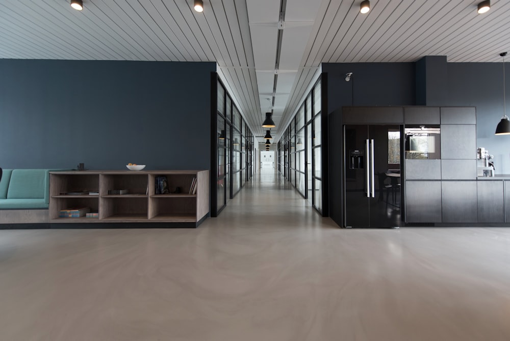

Signalering
Automatische monitoring van publicaties met matchscore, zodat u direct ziet welke aanbestedingen aandacht verdienen.
Aanbestedingssoftware voor elke sector
BidMind signaleert relevante aanbestedingen, analyseert de stukken, adviseert over go/no-go en schrijft en reviewt de inschrijving in uw huisstijl. Eén platform voor het hele tenderteam, van eerste signaal tot indiening.
Ingezet bij inschrijvingen in onder meer
Werkwijze
BidMind volgt de manier waarop goede tenderteams al werken. Elke stap wordt door een eigen AI-agent voorbereid en door uw team beoordeeld.
Dagelijkse scan van TenderNed, TED en andere publicatieplatforms op basis van uw profiel, CPV-codes en regio. Elk signaal krijgt een matchscore.
Alle aanbestedingsstukken worden gelezen en omgezet in een eisenmatrix, gunningscriteria, planning en een lijst met risico's en onduidelijkheden.
Een onderbouwd advies binnen een dag: past deze opdracht bij uw organisatie, referenties en capaciteit? Inclusief voorstel voor vragen in de nota van inlichtingen.
Concepten voor plan van aanpak, kwaliteitsplannen en open vragen, geschreven vanuit uw kennisbank en in uw eigen schrijfprofiel. Uw team stuurt bij en vult aan.
Controle op volledigheid, consistentie en aansluiting op de gunningscriteria, met een verwachte score per onderdeel. Daarna exporteren en indienen.
Functies
Signaleren, analyseren, schrijven, reviewen en beheren in één omgeving, met uw kennisbank als gedeelde basis voor het hele team.
Automatische monitoring van publicaties met matchscore, zodat u direct ziet welke aanbestedingen aandacht verdienen.
Eisenmatrix, gunningscriteria, planning en risico's uit alle stukken, inclusief bijlagen en nota's van inlichtingen.
Score op geschiktheid, kans en risico, onderbouwd met uw eerdere inschrijvingen en referenties.
Concepten in uw eigen toon en structuur, op basis van een schrijfprofiel dat tijdens de onboarding wordt ingericht.
Eerdere inschrijvingen, referenties, cv's, certificaten en beleidsdocumenten, doorzoekbaar en altijd actueel.
Elke eis afgevinkt, elk criterium beoordeeld met een verwachte score. Vormfouten worden gevonden vóór indiening.
Status, deadlines, documenten en taken per inschrijving. Iedereen in het team ziet wat er speelt en wie wat doet.
Hitrate, doorlooptijd, uren en scores per sector, opdrachtgever en periode. Inzicht voor directie en tendermanager.
Cases
Vier inschrijfteams uit verschillende sectoren, met de situatie waar ze mee begonnen en wat er in het eerste jaar veranderde.

Facilitaire dienstverleningRuim tien inschrijvingen per jaar met een klein tenderteam. De hitrate bleef achter bij de ambitie en de laatste week voor de deadline betekende structureel avondwerk.
"We kiezen nu bewust welke aanbestedingen we oppakken en winnen vaker als we meedoen. De laatste week voor de deadline is eindelijk rustig."
Raamovereenkomsten bij provincies en uitvoeringsorganisaties met lange eisenlijsten en veel reviewrondes. Een eerdere uitsluiting op een vormfout was de aanleiding om het proces anders in te richten.
"De eisenmatrix alleen al scheelt ons dagen. En we weten nu vóór indiening waar we nog punten kunnen winnen."
Wmo- en Jeugdwetprocedures met veel overlap, maar telkens net andere eisen. Teksten uit eerdere rondes stonden verspreid over mailboxen en netwerkschijven.
"Onze antwoorden zijn consistent geworden. Wat we in de ene gemeente beloven, klopt met wat we in de andere schrijven."
Inschrijvingen op beste prijs-kwaliteitverhouding waarbij het plan van aanpak het verschil maakt. De tendermanager schreef alles zelf en wilde meer tijd voor strategie.
"Het eerste concept ligt er nu binnen enkele dagen. Daardoor hebben we tijd over om het plan écht scherp te maken met de mensen die het werk gaan doen."
Sectoren
De procedure verschilt per sector, het proces niet. BidMind wordt tijdens de onboarding ingericht op uw markt, terminologie en opdrachtgevers.
Plannen van aanpak, EMVI en BPKV, UAV-GC en bouwteams. Referentie-eisen en certificeringen direct uit de kennisbank.
Wmo, Jeugdwet, Wlz en open house-procedures bij gemeenten en zorgkantoren. Consistente kwaliteitsantwoorden per regio.
Raamovereenkomsten, SaaS-aanbestedingen en detachering. Lange eisenlijsten, informatiebeveiliging en verwerkersafspraken.
Schoonmaak, catering, beveiliging en receptie. Veel inschrijvingen per jaar met hoge eisen aan social return en duurzaamheid.
Adviesbureaus, detacheerders en dynamische aankoopsystemen. Snel cv's en referenties matchen op de uitvraag.
Leerlingenvervoer, doelgroepenvervoer en logistiek. Ritplanning, materieel en kwaliteitsbeheersing goed onderbouwd.
Groenonderhoud, beheer en reiniging. Beeldkwaliteit, planning en duurzaamheid in heldere plannen.
Installatietechniek, verduurzaming en onderhoudscontracten. Technische eisen en prestatie-indicatoren afgedekt.
Beveiliging en beheer
Inschrijvingen bevatten prijzen, referenties en bedrijfsinformatie. BidMind is daarop ingericht: gescheiden dataomgevingen, hosting in de EU en heldere afspraken over verwerking.
Vraag de beveiligingsbijlage opAbonnement
Eén vaste prijs voor het volledige platform, de onboarding en een vast aanspreekpunt. Zo weet u vooraf precies waar u aan toe bent.
Inclusief 5 gebruikers · € 99 per extra gebruiker per maand
Jaarcontract, daarna maandelijks opzegbaar · Prijzen exclusief btw
Eén extra gewonnen opdracht per jaar betaalt het abonnement doorgaans ruimschoots terug. We rekenen het graag voor u door.
Veelgestelde vragen
Andere vraag? Mail naar info@bidmind.nl, we reageren binnen één werkdag.
Ja. BidMind is opgebouwd rond het inschrijfproces en werkt daardoor in elke markt. Tijdens de onboarding wordt het platform ingericht op uw sector, terminologie, opdrachtgevers en eerdere inschrijvingen. Zie de sectoren hierboven voor voorbeelden.
BidMind scant dagelijks openbare publicatieplatforms zoals TenderNed en TED. U stelt een profiel in met CPV-codes, regio's, opdrachtgevers en drempelwaarden. Elk signaal krijgt een matchscore, zodat u alleen leest wat relevant is.
BidMind versterkt uw team. Het leeswerk, de eerste concepten en de controles worden voorbereid, zodat uw tenderschrijver of bidmanager zich kan richten op de keuzes, de strategie en het eindoordeel. In de praktijk krijgen tendermanagers tijd terug voor selectie en strategie.
Uw documenten staan in een gescheiden omgeving op servers in de EU en worden uitsluitend gebruikt voor uw eigen inschrijvingen. Een verwerkersovereenkomst is standaard onderdeel van het abonnement. Op verzoek sturen we de beveiligingsbijlage.
Gemiddeld twee tot drie weken. We richten samen de kennisbank in met eerdere inschrijvingen, referenties en beleidsdocumenten, stellen het schrijfprofiel af op uw huisstijl en trainen het team. De eerste inschrijving begeleiden we van begin tot eind.
Een jaarcontract voor € 899 per maand, inclusief vijf gebruikers en alle functies. Extra gebruikers kosten € 99 per maand. Na het eerste jaar is het abonnement maandelijks opzegbaar.
Ja. In de demo werken we met een recente of lopende aanbesteding uit uw sector, zodat u ziet wat de analyse, het go/no-go advies en het eerste concept concreet opleveren.
Doorrekening op maat
Stuur ons het aantal inschrijvingen van vorig jaar en de gemiddelde doorlooptijd. We rekenen samen door wat een hogere hitrate en minder uren per inschrijving voor uw organisatie betekenen.
Contact
Laat uw gegevens achter en we nemen binnen één werkdag contact op om een afspraak te plannen. Een demo duurt ongeveer 45 minuten en gaat over uw aanbestedingen.